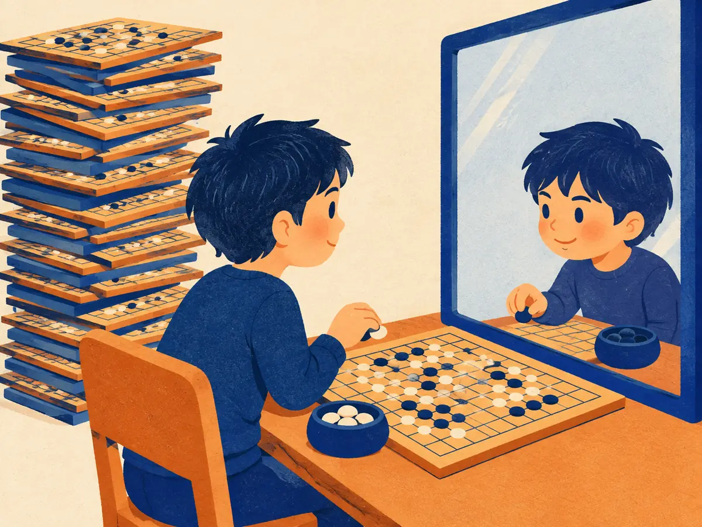

Self-play & search: AlphaGo to MuZero
In March 2016 a program beat one of the world's best Go players, years before many experts expected. It combined everything in this module: a policy network, a value network, reinforcement learning from self-play, and a tree search that thinks before it moves. Its successors dropped human data, then even the rules. The same "learn, then search at test time" idea is now reshaping LLM reasoning.
By the end you can
- Walk through one MCTS simulation (select, expand, evaluate, back up) and apply the PUCT rule.
- Explain what changed from AlphaGo to AlphaGo Zero, AlphaZero and MuZero.
- Explain why self-play is a curriculum, and how search connects to test-time compute in LLMs.
Take your best guess. A wrong guess now makes the right answer stick later.
AlphaGo Zero learned Go with no human games at all. Who did it learn from?
- A database of professional games, added later in training
- The original AlphaGo, as a teacher
- Itself: it played millions of games against its own latest version
- Hand-written Go rules of thumb
A strong Go program has a good neural network that suggests moves. Why would it still search (look ahead) before playing?
- Looking ahead at likely continuations catches mistakes the network's instant guess would make
- Search is only needed when the network is untrained
- The rules of Go require it
- To use up the time on the clock
Games as a proving ground: TD-Gammon and self-play
Games have been RL's favourite testbed for a simple reason: the rules are a perfect simulator, the reward (win or lose) is unambiguous, and you can play millions of games for free. The catch is the reward is very delayed: one bit at the end of a hundred moves.
Gerald Tesauro's TD-Gammon (IBM, 1992–95) showed what RL could do with that. A small neural network estimated the probability of winning from any backgammon position, a value function, and was trained with TD($\lambda$) (RL.3) on games it played against itself, starting from random weights. Later versions, which also searched two or three moves ahead (2-ply in TD-Gammon 2.x, 3-ply in 3.0), played close to the level of the world's best humans, and its unconventional opening choices changed how experts played some positions.
Self-play solves a problem that's easy to miss: who should the agent practise against? A fixed weak opponent is beaten quickly and then teaches nothing; a fixed strong one wins every game and gives no signal. Your own current self is always about the right strength. As you improve, so does your opponent, so self-play is an automatic curriculum. (It has failure modes too: a population of one can cycle between strategies or overfit to its own quirks, which is why later systems such as AlphaStar trained against a league of past versions.)
Why does self-play act as a curriculum?
- The rules get harder as training goes on
- The opponent is always the agent's current self, so the difficulty rises exactly as the agent improves
- It replays human games in order of difficulty
- It removes the need for rewards
Monte Carlo tree search
Classical chess engines search with minimax over a hand-tuned evaluation function. Go resisted this: about 250 legal moves per turn and no good hand-written way to evaluate a position. The breakthrough was Monte Carlo tree search (MCTS; named by Rémi Coulom in 2006, with the UCT algorithm of Kocsis & Szepesvári the same year). Instead of evaluating positions with rules, it plays out random games and averages the results, and grows a search tree that concentrates on the moves that look best. MCTS lifted Go programs to strong amateur level.
Each simulation has four phases:
- Select: from the root, walk down the tree, at each node picking the child that best balances "looks good so far" against "hasn't been tried much". It's the explore–exploit trade-off from the bandit in RL.1, applied at every node.
- Expand: when you reach a position not yet in the tree, add it.
- Evaluate: estimate how good it is (originally a random playout to the end; later a value network).
- Back up: pass that value up the path, updating each move's visit count $N$ and average value $Q$.
AlphaGo and its successors select with the PUCT rule (a variant of Rosin's 2011 "predictor + UCB"). At each node, choose the move $a$ that maximizes
$$Q(s,a) + c\,P(s,a)\,\frac{\sqrt{\sum_b N(s,b)}}{1 + N(s,a)}$$In words: the move's average value so far, plus an exploration bonus that is large when the policy network's prior $P(s,a)$ likes the move, grows slowly as the parent is visited more, and shrinks as this particular move gets visited. $c$ sets how much to explore. Early on, the prior steers the search; with many visits, the measured values take over.
Worked example
The animation's root has been visited 10 times ($\sum_b N = 10$, $\sqrt{10} = 3.162$), with $c = 1.5$. Move A has $P = 0.5$, $N = 6$, $Q = 0.55$.
- Bonus: $U = 1.5 \times 0.5 \times 3.162 / (1 + 6) = 0.339$.
- Score: $Q + U = 0.55 + 0.339 = 0.889$.
Same root ($c = 1.5$, $\sqrt{10} = 3.162$).
- Move B ($P = 0.3$, $N = 4$, $Q = 0.50$): bonus $U$ =
- B's score $Q + U$:
- Move C ($P = 0.2$, never visited, so $N = 0$ and $Q = 0$): score
C wins (0.949 beats A's 0.889 and B's 0.785) despite the lowest prior: an untried move's bonus is undivided. After one visit its bonus halves.
In PUCT, what happens to a move's exploration bonus as that move is visited more and more?
- It grows, so popular moves stay popular
- It stays fixed at $c \cdot P$
- It becomes negative
- It shrinks (the $1 + N(s,a)$ in the denominator), so the measured value $Q$ dominates
AlphaGo: networks plus search
AlphaGo (Silver et al., 2016, Mastering the game of Go with deep neural networks and tree search) plugged deep networks into MCTS:
- A policy network first trained by supervised learning to predict expert moves (about 30 million positions from online games; 57% accuracy), then improved by policy-gradient RL through self-play, REINFORCE-style (RL.4).
- A value network trained to predict the winner from a position, on 30 million positions taken from separate self-play games.
- MCTS used the supervised policy network's output as priors, and evaluated leaves by mixing the value network with fast rollouts.
It beat European champion Fan Hui 5–0 in October 2015, then Lee Sedol 4–1 in Seoul in March 2016. Its move 37 in game 2, a shoulder hit that commentators first took for a mistake, became famous as a move a human professional would rarely play. Lee Sedol's own move 78 in game 4, which won him that game, is just as famous.
In AlphaGo, what did the policy network contribute to the tree search?
- Prior probabilities that focus the search on promising moves
- The final win/loss reward
- The rules of Go
- Random playouts
AlphaGo Zero and AlphaZero: learning from scratch
AlphaGo Zero (Silver et al., 2017, Mastering the game of Go without human knowledge) removed the human data entirely, tabula rasa. One network with two heads outputs both a move distribution $\mathbf p$ and a value $v$; leaves are evaluated by $v$ alone, with no rollouts. Training is a loop:
- Self-play with MCTS (1,600 simulations per move). The search's visit counts give an improved move distribution $\boldsymbol\pi$, usually stronger than the raw network's $\mathbf p$.
- When the game ends, record the winner $z = \pm 1$ for every position.
- Train the network to match both: $\;\ell = (z - v)^2 - \boldsymbol\pi^\top \log \mathbf p + c\,\lVert\theta\rVert^2$.
Search acts as a policy-improvement operator: the network imitates its own search, so the next search starts from better priors, and so on. After three days of self-play it beat the version that had beaten Lee Sedol by 100 games to 0.
AlphaZero (Silver et al., preprint 2017; Science 2018) ran the same algorithm, unchanged apart from the game rules and inputs, on chess, shogi and Go, and beat the champion programs Stockfish (chess) and Elmo (shogi) as well as AlphaGo Zero.
Explain like I'm 5

Imagine playing a board game against your reflection in a mirror. Your reflection is exactly as good as you are, every single day.
Before each move you think ahead: "if I go here, it might go there…". After every game, you add the board to your stack of old games and study it: which of your quick guesses did the careful thinking change, and who won?
Your quick guesses get better, so your thinking ahead gets better, so your games get better. And because the mirror improves with you, the games never get too easy.
Where it breaks: a reflection copies you exactly. In self-play the two sides choose moves independently (and randomly enough to explore), so the games differ even though both players are "you".
What target does AlphaGo Zero train its policy head toward?
- Moves from professional games
- The single move that was finally played, as a one-hot label
- The distribution of MCTS visit counts at that position
- A uniform distribution over legal moves
MuZero, and search in LLMs
AlphaZero still needs the rules: MCTS must simulate "what happens if I play here". MuZero (Schrittwieser et al., 2020, Mastering Atari, Go, chess and shogi by planning with a learned model) learns its own model instead. Three functions are trained together: a representation function that turns observations into a hidden state, a dynamics function that predicts the next hidden state and reward for an action, and a prediction function that outputs policy and value. MCTS then plans entirely inside this learned latent space. The model never has to reconstruct the screen or board; it only has to be useful for predicting rewards, values and policies. MuZero matched AlphaZero at Go, chess and shogi without being told the rules, and set a new state of the art on the 57-game Atari benchmark.
The lineage, in one line each:
- TD-Gammon (1992–95): value network + self-play + TD.
- AlphaGo (2016): human-data policy + RL + value net + MCTS.
- AlphaGo Zero (2017): no human data; search teaches the network.
- AlphaZero (2017/2018): same algorithm, three games.
- MuZero (2020): learned model; no rules needed.
What is the key thing MuZero learns that AlphaZero was given?
- A value function
- A model of the environment's dynamics (in a hidden space), so it can plan without the rules
- A policy network
- The PUCT exploration constant
Explain how AlphaGo Zero improves itself without any human games.
Put the four phases of one MCTS simulation in order.
- Expand → select → back up → evaluate
- Evaluate → select → expand → back up
- Select → evaluate → back up → expand
- Select → expand → evaluate → back up
Connect to RL.1: the PUCT exploration bonus plays the same role as which earlier idea?
- Exploring under-tried arms in a bandit (as UCB does), applied at every node of the tree
- The discount factor $\gamma$
- The Markov property
- Experience replay
Connect to RL.5: AlphaGo Zero's network has a policy head and a value head. Which earlier architecture is that most like?
- DQN: one Q-value per action
- A Q-table
- Actor-critic: a policy (actor) and a value function (critic) trained together
- A reward model
Which result belongs to AlphaGo Zero?
- Beat Lee Sedol 4–1 in March 2016
- Beat the version of AlphaGo that defeated Lee Sedol 100–0, with no human training data
- Played 57 Atari games with a learned model
- Learned backgammon in the early 1990s
Key takeaways
- Self-play gives an opponent that improves with you: an automatic curriculum (TD-Gammon onward).
- MCTS: select (PUCT: $Q$ + prior-weighted bonus) → expand → evaluate → back up; play the most-visited move.
- AlphaGo (2016) = networks + MCTS, beat Lee Sedol 4–1. AlphaGo Zero (2017) learned tabula rasa: the network imitates its own search.
- AlphaZero generalized to chess and shogi; MuZero (2020) plans with a learned model, no rules required.
- For LLMs: test-time search and "train on what the search/verifier found" echo this loop (RS.2–RS.4).
Adding cards schedules your first spaced review.